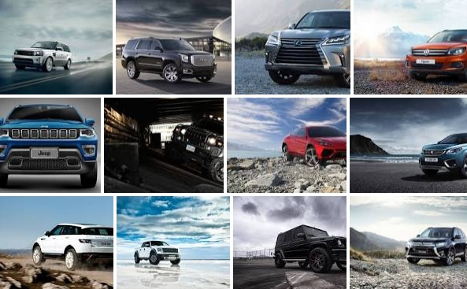

KILASAN
-

SUV JEPANG
Kenapa harus SUV jepang? karna merek jepang jepang ternyata lebih dicintai di Amerika apalagi Indonesia. eksistensi merek Jepang di negerinya. Sebuah studi baru menunjukkan bahwa, di Amerika Serikat, 10 model mobil yang dipertahankan pemiliknya selama 10 tahun atau lebih, didominasi oleh Toyota, Honda, Subaru dan Lexus. Mengutip Carscoops, Rabu (28/12/2016) penelitian yang dilakukan oleh iSeeCars menunjukkan model SUV dan minivan, tetapi juga hibrida seperti Toyota Highlander, yang ada di peringkat pertama. Kemudian Toyota Prius dan Lexus RX, dua pilihan lain yang paling populer untuk jangka panjang. Dalam rangka menyelesaikan studi mereka, iSeeCars menganalisis lebih dari 2,5 juta mobil bekas model tahun 1981-2006. "Sepuluh besar mobil yang awet digunakan rakyat Amerika adalah merek Jepang, di mana bukan suatu kejutan, karena merek ini memiliki reputasi baik dari sisi keandalan. Namun, yang mengejutkan adalah urutannya," ujar Phong Ly, CEO iSeeCars. "Ini jenis mobil yang cenderung digunakan sebagai mobil keluarga, sehingga mereka mungkin berharap untuk disimpan selama bertahun-tahun, terutama saat pemiliknya membeli saat memulai keluarga baru," tutur Ly. Meski begitu, saat ini perusahaan Jepang juga sedang khawatir terkait pemimpin baru Amerika, yang mulai menggelorakan sentimen “Buy American”. Ini bisa mengancam bisnis mereka di sana yang sudah berakar cukup dalam.